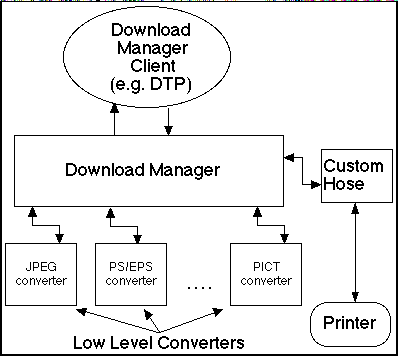
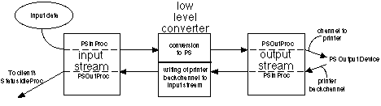

|
|
This Technote is divided into two sections. Section 1 discusses the Download Manager API that Download Manager clients would use to call the Download Manager to cause a file, or other data, to be downloaded to a PostScript printer. (The Desktop Printing software is an example of a Download Manager client that uses this API.) Writers of low-level converters should read Section 1 to get an overview of the environment in which their converter will operate.
Section 2 discusses the APIs that the Download Manager uses to call the low-level converters. This material is intended for the writers of the low-level converters which are called by the Download Manager.
In addition to downloading files to a PostScript output device, it is possible for a client to provide the data from a source other than a file or to obtain the PostScript output data itself rather than have it transmitted to a device. Programmers who wish to create a Download Manager client that supplies the data to convert and/or a client that receives the Download Manager generated PostScript output should read the discussion of streams in Section 2.
Moreoever, programmers who wish to create a Download Manager client that only downloads files to a PostScript output device need not read Section 2.
Updated: [May 24 1999]
|
Introduction
PrintingLib version 8.6, which is included with LaserWriter 8 version 8.6, adds new functionality. One part of this functionality is the Download Manager, which allows clients to print data to PostScript printers without launching a separate application. LaserWriter 8.6 also added the Printing Plug-ins Manager and Custom Hose support. These other features will be described in separate Technotes.
The Download Manager allows a client, such as Desktop Printing, to print documents directly to a PostScript printer without launching a separate application. There are several benefits to printing the data directly. Since applications tend to be memory intensive and relatively slow to launch, the Download Manager can call a converter plug-in and start the job printing more quickly. Rather than having an application convert the data to QuickDraw and then have the printer driver convert the QuickDraw data to PostScript, the Download Manager allows the image data to be converted directly to PostScript. This lowers the overhead involved with converting a data format to PostScript, and also allows more efficient PostScript code to be generated. An extra benefit to this process is that the user need not necessarily have an application which can open and print the document.
Here's how it works: the user drags a given file onto a desktop printer. The Desktop Printing software then asks the Download Manager whether it knows how to download this file. If the Download Manager says yes, the Desktop Printing software calls the Download Manager to download the file. If the Download Manager cannot handle the file, Desktop Printing opens the application with a print event as it did before the Download Manager existed and the user can print the document from the application.
|
Note:
The Download Manager is not restricted to use by the Desktop Printing software and can be used by other clients.
|
The design of the Download Manager is intended to be modular, so that it can download new data types without being changed itself. It does this by using converter module plug-ins, referred to here as "low-level converters." These components are the functional units which convert a given data type into PostScript language code appropriate for sending to a PostScript printer. These low-level converters are shared libraries which conform to the interface required by the Download Manager.
The Download Manager currently provides several built-in converters together with the ability to drop new low-level converters into a special folder so they are available for use with the Download Manager. PrintingLib version 8.6 and later provide converters to handle PostScript and EPS files, PICT data files, and non-progressive JPEG images.
To provide an idea how this all ties together in Mac OS 8.5, Desktop Printing is a client of the Download Manager. The Download Manager uses the Printing Plug-ins Manager to manage its plug-ins, which include low-level converters and custom hoses. Low-level converters take a file of a given type and convert it directly to PostScript, without going through an application or a driver. The Download Manager then sends the generated PostScript to the printer using a custom hose, which is specified by the Desktop Printer.

Back to top
Section 1
This section discusses the calls that a Download Manager client uses to download data through the Download Manager. Most Download Manager clients can ignore Section 2, which discusses the APIs that the Download Manager itself uses to call the low-level converters. The section File Download Example is an example of using the Download Manager to download a file. This is the approach that the Desktop Printing software uses.
Download Manager APIs
The Download Manager APIs allow a client to determine whether the Download Manager, together with the current set of low-level converter modules available, can convert and download a given piece of data. This data may be the data fork of a file, or it may be supplied by the client via a stream mechanism which is defined below. Once the client has determined if the Download Manager can handle the data, it calls the Download Manager routine to invoke the processes of conversion and downloading.
Back to top
Downloading Files
This section of the document describes the high-level APIs that a client of the Download Manager, such as the Desktop Printing software, would call to download files. First, the client calls the psCanDownloadFile routine:
psCanDownloadFile
OSStatus psCanDownloadFile(const FSSpec *fileSpecP,
Collection hints, Handle papaHandle,
Boolean *canDownloadP,
DownloaderInfo *downloaderInfoP, Str255 errReason);
|
psCanDownloadFile asks the Download Manager whether it can download the file represented by fileSpecP.
fileSpecP is a pointer to an FSSpec corresponding to the file to be downloaded.
hints is a Collection containing information about the destination output device and possibly user requests for how the data should be converted and downloaded.
papaHandle is a handle to a PAPA for the target output destination.
canDownloadP is a pointer to a Boolean that is set to true or false depending on whether the file can be downloaded by one of the low-level converters available to the Download Manager.
downloaderInfoP is a pointer to a DownloaderInfo structure that the client uses to call the psDownloadFile routine of the Download Manager (described below). The DownloaderInfo structure is defined as follows:
typedef struct DownloaderInfo{
unsigned char converterID[256];
}DownloaderInfo;
|
The Download Manager routine psCanDownloadFile writes information into the DownloaderInfo structure, which it can later use to select which low-level converter to use for the download.
The errReason argument to psCanDownloadFile is a pointer to a Str255 which may be filled in with a text string message should an error occur during this call. This is supplied to facilitate reporting problems back to clients of the Download Manager.
|
Note:
Even if an error occurs, errReason may contain a zero-length string.
|
Note that whether the Download Manager can handle a given file may be dependent on the hints collection and papaHandle passed to psCanDownloadFile. If the target device changes, psCanDownloadFile should be called again to ensure that indeed the Download Manager can download the file to the new target device. It is possible that this will not be the case, or, the DownloaderInfo returned will differ from that originally obtained. This comment is specifically directed to clients such as the Desktop Printing software, where dragging files from one DTP queue to another must be considered.
Once a client determines that the document can be downloaded by the Download Manager, it can call the routine psGetDownloadDocumentInfo to obtain information (such as number of pages) about the document. The structure DownloadDocumentInfo (described shortly) is filled in by this call with information determined by the Download Manager and the low-level converter.
psGetDownloadDocumentInfo
OSStatus psGetDownloadDocumentInfo(const FSSpec *fileSpecP,
Collection hints,
const DownloaderInfo *downloaderInfoP,
DownloadDocumentInfo *downloadDocInfoP,
Str255 errReason);
|
psGetDownloadDocumentInfo asks the Download Manager to gather document information about a file.
fileSpecP is a pointer to an FSSpec corresponding to the file for which the information is requested.
hints is a Collection containing information about the destination output device and possibly user requests for how the data should be converted and downloaded.
downloaderInfoP is a pointer to the data returned by psCanDownloadFile when it can download the file. This allows the Download Manager to find the converter which it determined can handle the download during the psCanDownloadFile call.
Note that the DownloaderInfo data returned by psCanDownloadFile can be stored and reused at a later time. There is nothing in the DownloaderInfo structure that can't be used across reboots. It is possible that the low-level converter referenced in the DownloaderInfo structure may not be available at a later time due to user actions such as deleting the converter. Download Manager clients should be prepared for the error errInvalidDownloaderInfo if a saved DownloaderInfo structure is used. An additional disadvantage of saving the DownloaderInfo structure is that a low-level converter later added to the system will not be used, even if it is better able to handle the data.
downloadDocInfoP is a pointer to a DownloadDocumentInfo structure. The DownloadDocumentInfo is a structure to receive the data and is defined shortly.
errReason is a pointer to a Str255 which may be filled in with a text string message should an error occur during this call. This is supplied to facilitate reporting problems back to clients of the Download Manager.
|
Note:
Even if an error occurs, errReason may contain a zero-length string.
|
DownloadDocumentInfo structure
The DownloadDocumentInfo structure filled in by psGetDownloadDocumentInfo is defined as:
typedef struct DownloadDocumentInfo{
SInt32 version; // caller must set to 1
OSType type;
Boolean isManualFeed; //true if job is manual feed,else false.
SInt32 pages; // Unknown = -1
SInt32 copies;// Unknown = -1
Str255 creator; // unknown for most converters use "\p"
Str255 title; // unknown for most converters use "\p"
}DownloadDocumentInfo;
|
The version field should be set to the version of the structure that the caller of psGetDownloadDocumentInfo supplies. This allows for the ability in the future to supply a pointer to a larger structure that potentially provides additional data. The only version defined at this time is version 1.
The type field of this structure is the type of document being downloaded. The type of data may in some cases not be known by the Macintosh Finder TYPE information, but instead might be only known to a low-level converter that knows how to handle the data. The type returned here is available for a client to use as it wishes; for example, a client could have a special icon for different document types. The list of types which might be returned by this call is unlimited since new converter modules can be added via Plug-Ins. The types which have been defined to date are:
- 'EPSF': Encapsulated PostScript File
- 'PSDC': PostScript file, claims to be DSC 3.0 conformant or greater
- 'PSUN': PostScript file, does not claim to be DSC 3.0 conformant or greater
- 'JFIF': JPEG data file
- 'PICT': Macintosh PICT data file
- 'TIFF': TIFF data file
- 'TEXT': Plain text file to be treated as unformatted text
- 'PDF ': Adobe Systems' PDF document format
- '????': An unknown type of file.
The isManualFeed field allows the Download Manager to notify the caller that this download job requests manual feed. This allows a client, such as the Desktop Printing software, to notify the user when a manual feed job begins. Note that it is possible that the print job requests manual feed, but it is a save-to-disk job. In this case, it would be inappropriate to alert the user that a manual feed job is starting since a disk file is being written and is not a print job to a live printer. A routine is available in FeatureUtilsLib called psIsJobPrintToDisk which Download Manager clients can call if isManualFeed is set to true.
The pages field of the DownloadDocumentInfo is the number of pages in the document. For some types of documents handled by the Download Manager it may be unknown and this is indicated by use of the value -1.
The copies field of the DownloadDocumentInfo is the number of copies of the document which will be printed. (This is typically 1, but there are some situations where it might be different. For many low-level converters' handling of features, this reflects the default number of copies that the user has as their saved defaults for the Print Dialog. If the user has a different saved default for the number of copies, many converters respect that and report it here.) Currently there is no straightforward way to know the number of copies for most PostScript files and this is indicated by the value -1 for the number of copies.
The creator field of the DownloadDocumentInfo is a text string indicating the name of the application used to create the original file. This is unknown for many document types, but for PostScript files containing the %%Creator comment, the application creating the document may be available. If the document creator is not available, the creator field of the DownloadDocumentInfo is a zero-length string.
The title field of the DownloadDocumentInfo is a text string which indicates what the original file name was when creating this file. This is unknown for many document types, but for PostScript files containing the %%Title comment, the name of the original document may be available. If the original document title is not available, the title field of the DownloadDocumentInfo is a zero-length string.
psDownloadFile
Once the Download Manager client has determined that the file can be handled by the Download Manager, it calls the psDownloadFile routine to perform the download:
OSStatus psDownloadFile(const FSSpec *fileSpecP,
Collection hints, Handle papaHandle,
const DownloaderInfo *DownloaderInfoP,
StatusIdleProcUPP idleProc, void *clientIdleParams,
Str255 errReason);
|
psDownloadFile causes the Download Manager to download the file represented by fileSpecP using the converter specified in downloaderInfoP.
fileSpecP is a pointer to an FSSpec corresponding to the file to be downloaded by psDownloadFile.
hints is a Collection containing information about the destination output device and possibly user requests for how the data should be converted and downloaded.
papaHandle is a handle to a PAPA for the target output destination.
DownloaderInfoP is a pointer to the data returned by psCanDownloadFile when it can download the file. This allows the Download Manager to find the converter which it determined can handle the download during a prior psCanDownloadFile call.
|
Note:
The DownloaderInfo data returned by psCanDownloadFile can be stored and reused at a later time. There is nothing in the DownloaderInfo structure that can't be used across reboots; however, it is possible that the low-level converter referenced in the DownloaderInfo structure is not available at a later time due to user actions such as deleting the converter. Download Manager clients should be prepared for errors when a saved DownloaderInfo structure is used.
|
idleProc is a Universal Proc Pointer to a routine supplied by the caller of psDownloadFile, i.e., the Download Manager client. The Download Manager calls this idleProc routine with status information during the download. The idleProc routine is responsible for giving time to other applications, reporting status information to the user and handling user interactions with the client as the download proceeds.
clientIdleParams is a pointer to data supplied by the Download Manager client. This pointer is supplied as part of the data passed to each call of the idleProc during the download.
|
Note:
The resource chain at the time the idleProc is called is not guaranteed. The Download Manager and its low-level converters may open resource files and add them to the resource chain during their execution. Clients whose idleProc routines require resources from their resource files should take care to ensure that any additional open resource files are not in the way. The most straightforward way for a client to do this is to have a field in their clientIdleParams structure which is the current resource file at the time they call psDownloadFile. In addition, an idleProc muse preserve the resource chain. If you change the resource chain in your idleProc, you must save and restore the resource chain using CurResFile and UseResFile.
|
The errReason argument to psDownloadFile is a pointer to a Str255 which may be filled in with a text string message should a download fail. This is supplied to facilitate reporting problems back to clients of the Download Manager.
|
Note:
Even if an error occurs, errReason may contain a zero-length string.
|
The error value errCantHandleThisDownloadData (defined in DownloadMgrLib.h) is a special error value that may be returned by the psDownloadFile call if a converter module determines that, even though it previously reported that it could download a file, it has now determined that it can't download that file. This should be a rare occurrence.
Back to top
The Status-Idle Procedure
The idleProc supplied to the call psDownloadFile is a Universal Proc Pointer containing a procedure of type StatusIdleProc. This is defined as follows:
typedef pascal OSStatus(*StatusIdleProc)(DownloadIdleInfo *param);
This procedure is called with a pointer to a DownloadIdleInfo structure.
This structure is defined as follows:
typedef struct DownloadIdleInfo{
void *clientIdleParams; /*the client's IdleParam data */
long currentPage;/* -1 means Unknown */
long totalPages; /* -1 means Unknown */
short percentageDownloaded; /* -1 means Unknown, otherwise
/* ranges from 0 to 100 */
PSSection section;/* one of the PSSection
values from PSSectionInfo.h */
PSSubsection subsection; /* one of the PSSubsection
values from PSSectionInfo.h */
void *statusInfoP;/* pointer to data appropriate
for this download idle call.
See PSSectionInfo.h for
details.
*/
}DownloadIdleInfo;
|
The StatusIdleProc is supplied by the client and is called by the Download Manager during the download. clientIdleParams is the data pointer supplied by the client as the clientIdleParams parameter to the psDownloadFile call.
The currentPage and totalPages fields are filled in if and when the Download Manager can determine this data.
The percentageDownloaded field reflects the progress of the download. The Download Manager uses the percentage of the input data read by the converter during the download as its way of reporting progress.
|
Note:
If a low-level converter does not read the file data in a sequential fashion, the Download Manager will set the percentageDownloaded field to "Unknown" and no longer update the percentageDownloaded field during that download. Since this field may be "Unknown," a status bar should properly change its indicator to "Unknown" accordingly.
|
The section field indicates which phase of the download is currently in progress. Currently the possible section values are kSectCoverPage, kSectAnon, kSectPeek, kSectQueryJob, and kSectJob.
The subsection field contains Document Structuring Conventions information or other section information about the PostScript data being downloaded (see the heading DownloadIdleInfo Section, Subsection and StatusInfo below).
The statusInfoP field contains a pointer to information corresponding to the current subsection. For example, if the subsection is kSubStatusSection, the information in statusInfoP is a pointer to a Pascal string containing a status message from the printer and should be treated accordingly. If the subsection is kSubBeginFont, the statusInfoP contains a pointer to a DSCData structure describing the font being downloaded. If the subsection is kSubPrinterErrorSection, the statusInfoP contains a pointer to a Pascal string describing a printer error condition, such as out of paper, that requires user intervention.
The client's StatusIdleProc is required to give time to other applications, handle user interactions with the client and report status to the user. If StatusIdleProc returns an error, the Download Manager aborts the download.
DownloadIdleInfo Section, Subsection, and StatusInfo
The DownloadIdleInfo structure has fields which supply status information about the download to a client's StatusIdleProc. The first of these fields is the section field which is of type PSSection. A PSSection value provides overall information about what part of the download is in progress. PSSection values consist of kSectAnon, kSectQueryJob, kSectCoverPage, kSectJob, and kSectPeek. The definition of PSSection is in the "PSSectionInfo.h" header file. The Download Manager is responsible for setting the section field of the DownloadIdleInfo structure and does this as it processes the different sections of the download job.
The PSSection field corresponds to the various parts of a download: the query, peeking at the data that a low-level converter can do as part of a download, the cover page (if there is one) and the actual download job itself. A converter doesn't start generating PostScript data until the kSectCoverPage or kSectJob PSSection values are seen.
The subsection field is of type PSSubsection. A subsection value provides finer granularity in the reporting of progress of the download job. Typically the subsection values correspond to Document Structure Conventions (DSC) comments which have a well-defined meaning. A few subsection values have been added to provide additional information. Each section can contain the same subsection values, although most of the subsections apply only to the kSectJob, kSectCoverPage, and kSectPeek sections.
The Download Manager generates status and error subsection values. Beyond that, each low-level converter module is responsible for generating subsection values during the download. While any subsection value from the list in "PSSectionInfo.h" is possible, Table 1 lists those most likely to be generated by existing low-level converters. No one converter necessarily generates all of these subsection values for each job.
The DownloadIdleInfo structure contains a statusInfoP field which is declared as a (void*) field. The statusInfoP field may be NULL in any subsection, meaning that the subsection value is being reported without any additional information. If the data is non-NULL, it is a pointer to a data type that depends on the subsection being reported in the DownloadIdleInfo structure. The complete list of subsections together with their info field structure is listed in "PSSectionInfo.h." Table 1 below lists the ones most likely to be seen.
|
Note:
It is important for an idleProc to check that the statusInfoP field is not NULL before attempting to dereference it. |
For example, the low-level PostScript converter module (which downloads PostScript and EPS input data) generates the kSubPages subsection when the section is kSectJob or kSectPeek and it encounters the %%Pages DSC comment in the PostScript data. At that time, it reports the kSubPages subsection with the statusInfoP field pointing to an SInt32 value that is the number of pages in the document.
Table 1
| Subsection | DSC Comment | statusInfo structure |
|
kSkSubPSAdobe
|
%!PS-Adobe-x.y
|
Fixed
|
|
|
kSubPSAdobeEPS
|
%!PS-Adobe-x.y EPSF-a.b
|
EPSFVersion
|
|
kSubBoundingBox
|
%%BoundingBox
|
DSCBBox
|
|
kSubDocData
|
%%DocumentData |
DSCDocumentDatA
|
|
kSubEndComments
|
%%EndComments
|
none
|
|
kSubLangLevel
|
%%LanguageLevel
|
SInt32
|
|
kSubPages
|
%%Pages
|
SInt32
|
|
kSubContinue
|
%%+
|
DSCContinuationData
|
|
kSubBeginProlog
|
%%BeginProlog
|
none
|
|
kSubEndProlog
|
%%EndProlog
|
none
|
|
kSubBeginSetup
|
%%BeginSetup
|
none
|
|
kSubEndSetup
|
%%EndSetup
|
none
|
|
kSubBeginPageSetup
|
%%BeginPageSetup
|
SInt32 (page #)
|
|
kSubEndPageSetup
|
%%EndPageSetup
|
SInt32
|
|
kSubPage
|
%%Page
|
DSCPage
|
|
kSubEOF
|
%%EOF
|
none
|
|
kSubDocNeededRes
|
%%DocumentNeededResources
|
DSCData
|
|
kSubDocSuppliedRes
|
%%DocumentSuppliedResources
|
DSCData
|
|
kSubDocFonts
|
%%DocumentFonts
|
DSCData
|
|
kSubDocNeededFonts
|
%%DocumentNeededFonts
|
DSCData
|
|
kSubDocSuppliedFonts
|
%%DocumentSuppliedFonts
|
DSCData
|
|
kSubBeginFeature
|
%%BeginFeature
|
DSCFeature
|
|
kSubEndFeature
|
%%EndFeature
|
none
|
|
kSubIncludeFeature
|
%%IncludeFeature
|
DSCFeature
|
|
kSubBeginFont
|
%%BeginFont
|
DSCData
|
|
kSubEndFont
|
%%EndFont
|
none
|
|
kSubBeginBitmapFont
|
%RBIBeginBitmapFont
|
Str255
|
|
kSubEndBitmapFont
|
%RBIEndBitmapFont
|
none
|
|
kSubBeginTrueTypeFont
|
%RBIBeginTrueTypeFont
|
Str255
|
|
kSubEndTrueTypeFont
|
%RBIEndTrueTypeFont
|
none
|
|
kSubBeginTrueTypeScaler |
%RBIBeginFontRasterizer |
none
|
|
kSubEndTrueTypeScaler
|
%RBIEndFontRasterizer
|
none
|
|
kSubIncludeFont
|
%%IncludeFont
|
DSCData
|
|
kSubBeginResource
|
%%BeginResource
|
DSCData
|
|
kSubEndResource
|
%%EndResource
|
none
|
|
kSubIncludeResource
|
%%IncludeResource
|
DSCData
|
|
kSubStatusSection
|
(see below)
|
Str255
|
|
kSubPrinterErrorSection
|
(see below)
|
Str255
|
|
kSubFatalPrinterErrorSection
|
(see below)
|
Str255
|
|
kSubGiveUpTime
|
(see below)
|
none
|
|
kSubLogWarningData
|
(see below)
|
DSCLogData
|
|
kSubLogErrorData
|
(see below)
|
DSCLogData |
A few of the subsections do not correspond to DSC comments but instead are used to convey information to the client such as status data, printer error conditions, and error or warning messages from a converter.
The kSubStatusSection subsection contains the normal status during the download as reported from a live printer or the save-to-disk process. This is normally seen as a status narration line in the Download Manager client's downloading dialog.
The kSubPrinterErrorSection subsection is used to report a printer error condition that should be reported to the user. Usually a client reports the error through a notification. This subsection is supplied repeatedly until the printer error condition is cleared. These messages are strings such as "out of paper", "cover open", and "paper jam".
The kSubFatalPrinterErrorSection subsection is used to report fatal printer errors to the user. The fatal printer error is usually a PostScript error.
The kSubGiveUpTime subsection is used by a low-level converter when it has no data to write but wants to give time to the Download Manager and its clients.
The kSubLogWarningData subsection is used by a low-level converter to report warning conditions to the client. These are not fatal errors, but rather conditions which might lead to a failure in the download. For example, the PostScript converter supplies a warning if the document being downloaded requires a PostScript language level greater than the target output device supports. This will very likely result in a PostScript error during the download, but the warning itself does not result in an error. A savvy client could warn the user, if it were so configured.
The kSubLogErrorData subsection is used by a low-level converter to report an error condition to the client. After reporting this error, the psDownloadFile call will terminate with an error supplied by the low-level converter. In this case, the errReason returned by psDownloadFile is filled in with a text message supplied by the low-level converter.
|
Note:
Even if an error occurs, errReason may contain a zero-length string.
|
The kSubLogWarningData and kSubLogErrorData subsections can supply a pointer to a DSCLogData structure as the statusInfoP structure. This structure is defined as:
typedef struct DSCLogData{
PSSubsection logSubsection;
void *info;
Str255 logMessage;
}DSCLogData;
|
The logSubsection field is a PSSubsection value and it is the subsection to which the warning or error corresponds. It is kSubAnon if it doesn't correspond to any other PSSubsection. The info field is a pointer to a structure which corresponds to the logSubsection value. That is, if the info field in a DSCLogData structure is non-NULL, it points to whatever structure is appropriate for the PSSubsection value of the logSubsection field, as described in Table 1 above. The logMessage field is a Str255 containing the actual text message.
For example, when the PostScript converter supplies a warning that the document being downloaded requires a PostScript language level greater than the target output device supports, it supplies a DSCLogData structure where the logSubsection value is kSubLangLevel.The structure pointed to by the info field is an SInt32 with the value of the document's language level requirement (which, in this case, exceeds that of the target output device). It also supplies a warning text message in the logMessage field.
Back to top
Utility Functions For A Client's Use of the Download Manager
psCreateDMJobCollection
The Download Manager makes available a routine called psCreateDMJobCollection. This call provides one-stop shopping for clients to prepare a collection for use with a given Download Manager job. For example, the Desktop Printing software makes this call with information about the current driver, the PAPA to use with that driver and a pointer to a FSSpec representing the file to download. If there is no error, psCreateDMJobCollection returns a collection to the caller which is appropriate for use with the Download Manager routines psCanDownloadFile and psDownloadFile. The collection represents the printer defaults and those collection items appropriate for this particular download.
Depending on how a client operates, it may be appropriate to call psCreateDMJobCollection once per download job. It is necessary to call psCreateDMJobCollection only once to obtain a collection for passing to psCanDownloadFile and the same collection can be passed to psDownloadFile if the collection is used immediately. If the collection needs to be stored, the target driver or printer changes, or there is any chance that saved user defaults have changed, a client should call psCreateDMJobCollection again to obtain a collection for passing to psDownloadFile.
OSStatus psCreateDMJobCollection(const FSSpec *driverFSSpecP,
Handle papaHandle, const FSSpec *theFileP,
Collection *hintsP);
|
driverFSSpecP is a pointer to a FSSpec corresponding to the driver for the target Desktop Printer (DTP). It does not have to be the current system printer driver. Calling psCreateDMJobCollection does not change the current system printer driver.
papaHandle is the PAPA to use for the target output device. It does not have to be the current PAPA in the driver corresponding to driverFSSpecP, nor does this routine change the current PAPA for the driver pointed to by driverFSSpecP.
theFileP is a pointer to an FSSpec for the file to be downloaded.
If there is no error, psCreateDMJobCollection returns a Collection corresponding to the default for the current printer, updated appropriately with hints for a Download Manager job in *hintsP. This collection is only intended to be passed to the Download Manager and must not be used to update the any saved defaults for a given printer. The caller is responsible for disposing of the collection properly.
File Download Example
For a Download Manager client such as the Desktop Printing software, downloading a file is fairly straightforward. The following example illustrates the basics:
#include "DownloadMgrLib.h"
#include "ClientSample.h" // included with Sample code
OSStatus DownloadFile(const FSSpec *driverFSSpecP,
const FSSpec *fsSpecToDownloadP,
Handle papaHandle)
{
/*
|
driverFSSpecP is a pointer to the FSSpec for the PostScript driver for the target DTP. It does NOT have to be the current system printer driver.
fsSpecToDownloadP is a pointer to the FSSpec for the file to download.
papaHandle is a handle to the PAPA for the target output device. It does not have to be the current PAPA contained in the driver corresponding to driverFSSpecP, nor will this routine change that driver's current PAPA.
*/
OSStatus err = noErr;
Str255 errReason;
Collection hints = NULL;
Boolean canDownload;
DownloaderInfo downloaderInfo;
DownloadDocumentInfo downloadDocumentInfo;
/* We'll get our hints collection for use with this job.
*/
err = psCreateDMJobCollection(driverFSSpecP, papaHandle,
fsSpecToDownloadP, &hints);
// check to see if the Download Manager can download the file
if(!err)err = psCanDownloadFile(fsSpecToDownloadP, hints,
papaHandle, &canDownload, &downloaderInfo,
errReason);
// get the information about the document
if(!err && canDownload){
downloadDocumentInfo.version = 1;
// set the version
err = psGetDownloadDocumentInfo(fsSpecToDownloadP,
hints, &downloaderInfo, &downloadDocumentInfo,
errReason);
if(!err){
// do whatever we need with the document information
// we gathered in psGetDownloadDocumentInfo
}
}else
// DM couldn't download the file so we'll set our
// our client's private iDMCantDownloadData error code
// to tell the caller of this routine that the DM
// couldn't handle the data
err = iDMCantDownloadData;
if(!err){
// idleProc is a Universal Proc Ptr to our status
// idle routine downloadIdle
StatusIdleProcUPP idleProc = MakeProcPtr(downloadIdle,
StatusIdleProcUPP);
DialogPtr dialog = GetNewDialog(STATUSDIALOG_ID, NULL,
(WindowPtr)-1);
if(dialog){
ShowWindow(dialog);
DrawDialog(dialog);
}
else
err = ResError();
if(!err){
ClientParams ourIdleParams;
ourIdleParams.statusDialog = dialog;
err = psDownloadFile(fsSpecToDownloadP,
hints, papaHandle, &downloaderInfo,
idleProc, &ourIdleParams, errReason);
}
if(dialog)DisposeDialog(dialog);
}
if(hints)DisposeCollection(hints);
// if we return the error code iDMCantDownloadData then
// the caller will assume that the DM couldn't handle
// the data and will take alternative action, i.e. launch
// the application with a print event
return err;
}
|
The code example assumes that we've defined a routine downloadIdle to handle the status idle calls and that the routine MakeProcPtr creates a universal procedure pointer of type StatusIdleProcUPP to be used by the Download Manager to call the client's downloadable routine.
The code example uses stack allocation for the errReason, downloaderInfo, and downloadDocumentInfo variables. Developers who are concerned about stack space usage may wish to allocate these variables dynamically.
Back to top
Downloading Streams
Some Download Manager clients may have data which is not in a file, but is instead supplied in another fashion. Other clients may want to direct the output to something other than a Desktop Printer and receive the converted PostScript output data directly. In these cases, the client provides an input stream for reading the data to convert and an output stream to which the Download Manager and the low-level converters write.
psCanDownloadStream
Note that the details of the PSStream data type are discussed in detail in the section Streams Information in Section 2.
OSStatus psCanDownloadStream(PSStream *stream, OSType type,
Collection hints, Boolean *doDownload,
DownloaderInfo *downloaderInfoP, Str255 errReason);
|
This function is similar to the psCanDownloadFile routine except that, instead of supplying an FSSpec, the caller provides a stream for reading the data and the type of the data. Here, the type of the data is the same as the Finder Type would be if the data were stored in a file. When using this call, the client guarantees that the stream is a stream type that can be positioned by users of the stream (see the section Streams Information in Section 2 for more information about positioning a stream). That is, the Download Manager and the converter modules it calls are able to rewind or otherwise reposition the stream as necessary.
|
Note:
Even if an error occurs, errReason may contain a zero-length string.
|
psCanDownloadData
If the client has data that allows it to be read only once, the psCanDownloadData routine must be used instead:
OSStatus psCanDownloadData(Str15 firstBytes, OSType type,
Collection hints, Boolean *doDownload,
DownloaderInfo *downloaderInfoP, Str255 errReason);
|
This function is similar to the psCanDownloadStream routine except that the caller provides the first 15 bytes of the data in the firstBytes parameter. The Download Manager uses firstBytes and the type of data to determine which, if any, converter module best handles the download. This routine is provided for clients who cannot provide a stream which can be repositioned. Note that a number of low-level converters may be completely excluded when using this type of stream.
|
Note:
Even if an error occurs, errReason may contain a zero-length string.
|
psDownloadStream
OSStatus psDownloadStream(PSStream *inputStream,
PSStream *outputStream, Collection hints,
const DownloaderInfo *downloaderInfoP,
Str255 errReason);
|
This function is similar to psDownloadFile except the client is responsible for providing both the data input stream and the output stream for the converted data. If inputStream is of a type that can be rewound, the Download Manager calls the psLowPeekConvert routine of the low-level converter used for the download; otherwise, it does not. The Download Manager queries the output stream using outputStream only if the hints collection contains the kHintDownloaderDoQueryTag hint with value true; if it doesn't, the creator of the stream is responsible for handling any queries and supplying their results in the hints collection. If the Download Manager does not perform the queries, a low-level converter does not have the opportunity to specify any queries.
A careful reader will notice that the psCanDownloadStream call does not have StatusIdleProc or clientIdleParams arguments. Because the Download Manager creates input and output streams for psDownloadFile, it knows how and when to extract data from those streams for the call to the client's idleProc. Since the client supplies these streams to the psDownloadStream call, the client is responsible for ensuring that the stream callback routines allow the client to give itself status information and other applications processing time.
|
Note:
Even if an error occurs, errReason may contain a zero-length string.
|
|
Note:
The Download Manager and its low-level converters may change the current port and gDevice at the time of their operation. Therefore the current grafPort and gDevice at the time the client's stream routines are called is not guaranteed. Clients which require a specific grafPort and gDevice are responsible for setting that port in their stream routine's equivalent of the idleProc code. This also applies to the current resource chain: new resource files may be opened and added to the resource chain by the Download Manager and its low-level converters. In addition, an idleProc must preserve the resource chain. If you change the resource chain in your idleProc, you must save and restore the resource chain using CurResFile and UseResFile.
|
|
Note:
The streams passed into the psCanDownloadStream, psCanDownloadData and psDownloadStream functions have functions which are called by the Download Manager and the low-level converters. The callers of these functions are doing so using CFM-calling conventions and assume that the code they are calling is of the same architecture as the machine. This forces the following constraint: these functions must be PPC native on PPC machines and 68k code on 68k machines. More unusual is the requirement that these routines must obey CFM-calling conventions on 68k machines, which means they must be contained in a CFM library on both 68k and PPC machines.
|
Back to top
Additional Utility Functions
psGetDownloadMgrLibVersion
The Download Manager provides an additional call for use by its clients:
OSStatus psGetDownloadMgrLibVersion(CFMVersion *version);
|
The psGetDownloadMgrLibVersion routine allows clients and low-level converters to determine CFM version data for the Download Manager library. The CFMVersion structure is defined as follows:
typedef struct CFMVersion{
long definition;
long implementation;
long current;
}CFMVersion;
|
Readers familiar with the Code Fragment Manager will notice that this information mirrors the version information built into a CFM library. Unfortunately, in some versions of the system software, the GetDiskFragment routine has a bug that won't allow it to load a library unless the definition, implementation, and current version numbers built into the library are all 0. To work around this bug, the Download Manager must all have these version numbers set to zero. To make it possible for a client of the Download Manager to determine the actual version information of the Download Manager, this call returns the version information for the Download Manager.
The Download Manager API does not contain any information about how to determine the location of the plug-ins folder that it uses for its plug-in converters. See Technote 1170: The Printing Plug-ins Manager for more information about calls relating to the "Printing Plug-ins" folder.
Back to top
Section 2
This section describes the public interface to the low-level converters that the Download Manager calls to perform the data conversion portion of the download. Developers writing programs which only invoke the Download Manager to download files to a desktop printer do not need to read this section to understand how to call the Download Manager.
Low-level Converter APIs
This section describes the APIs that the Download Manager uses to call the low-level converters that it knows about. The Download Manager knows about the built-in converters (a set of shared libraries built into PrintingLib) as well as converter modules in the "Printing Plug-ins" folder in the Extensions folder. Files containing converter module plug-ins must contain a resource of type 'PLGN', ID -8192 with the plug-in type 'down' and subtype '????'. Details of the PLGN resource are described in Technote 1170: The Printing Plug-ins Manager.
Back to top
Streams Information
Low-level converters don't know where the data they are converting comes from, nor do they know the ultimate destination of their PostScript output data. Instead, they read the data from input procedures and write data to output procedures. These procedures are packed into structures called streams.
PSStream structure
The low-level converters read and write data from stream structures of type PSStream. PSStream is defined as:
typedef struct PSStream{
PSStreamType type; // The type of Stream, used to pick
// from the union below.
void *reserved; // For use by the stream implementation.
union{
PSReservedStreamType1 null;
PSReservedStreamType2 spool;
PSSerialStream ps;
PSRandomAccessStream file;
}u;
}PSStream;
The PSStreamType is defined as:
typedef enum{
kReservedStreamType1,
kReservedStreamType2,
kPSSerialStream, //For streams that can not be positioned.
kPSRandomAccessStream //For streams that can be positioned.
}PSStreamType;
The PSSerialStream and PSRandomAccessStream are defined as:
typedef struct{
PSOutProc write; // output proc
PSInProc read; // input proc
UInt32 reserved; // reserved
PSPosition pos; // structural info about where we are
// in the PostScript stream
}PSSerialStream;
typedef struct{
PSSerialStream serialStream;
PSGetPosProc getPos;
PSSetPosProc setPos;
PSGetEOFProc getEOF;
}PSRandomAccessStream;
|
The PSRandomAccessStream stream has the same callbacks and data as the PSSerialStream, but it also has functions to get the current stream position, set the current stream position and get the size of the file.
The read and write procedures of the PSSerialStream and PSRandomAccessStream types are used to read data from and write data to the stream. They are declared as follows:
typedef OSStatus (*PSInProc)(PSStream *psStream,
void *data, SInt32 *nBytes);
|
The read field of the PSSerialStream structure contains a function of type PSInProc which is used to read data from the stream. The psStream parameter is a pointer to the stream being read. The data parameter is a pointer to a client-supplied buffer into which the data is read. The caller sets *nBytes to the number of bytes to read into the data buffer. It is up to the caller to ensure that the data buffer it supplies has enough room for *nBytes of data. After the function call, *nBytes contains the number of bytes actually read.
typedef OSStatus (*PSOutProc)(PSStream *psStream,
const void *data, SInt32 nBytes);
|
The write field of the PSSerialStream structure contains a function of type PSOutProc which is used to write data to the stream. The psStream parameter is a pointer to the stream being written to. The data parameter is a pointer to the data to be written to the stream. The nBytes parameter specifies the number of bytes to be written.
The PSInProc routine of the input stream is used by the low-level converter to read and examine the data to be converted to determine if it can handle this data stream. During the psLowPeekConvert and psLowDoConvert calls (described below), the low-level converter calls the PSOutProc routine of the input stream to give time and status to the client. The PSPosition structure is used to pass Document Structuring Conventions data and status information back to the client idleProc.
When actually converting data, a low-level converter is passed an output stream of type kPSSerialStream for it to write the converted data. The converter uses the PSOutProc of the output stream to write its converted data to the output device (or file). It reads data returned from the output device back channel via the PSInProc of the output stream. It writes the data read from the back channel to the PSOutProc of the input stream, allowing the Download Manager to report any status information coming from the back channel.
Note that some output streams have no PSInProc routine (such as a print to file stream). The PSInProc routine in an output stream should be tested for NULL before calling the procedure.
Back to top
Additional functions for random-access streams
Streams of type kPSRandomAccessStream have additional procedures available:
The PSGetPosProc procedure determines the current position of the mark in the stream corresponding to the file (or file-like stream). This position is based on the last data read from the stream, not the underlying file since the data may be buffered. The prototype for this function is:
typedef OSStatus (*PSGetPosProc)(PSStream *psStream,
SInt32 *currentPos);
|
The psStream parameter points to the stream whose position you want to obtain; the value of *currentPos returned is the current stream position.
The position value is zero-based; that is, the value of *currentPos is 0 if the stream position mark is positioned at the beginning of the stream.
The PSSetPosProc procedure sets the position of the stream mark. The next data read from the stream is the first byte after the stream mark.
typedef OSStatus (*PSSetPosProc)(PSStream *psStream,
SInt32 positionMode, SInt32 posOffset);
|
For the PSSetPosProc call, the positionMode is the positioning mode and posOffset is the positioning offset. The positionMode parameter indicates how to position the mark; it must contain one of the following values:
enum{
fsFromStart = 1, //set mark relative to beginning of stream
fsFromLEOF = 2, //set mark relative to logical end-of-stream
fsFromMark = 3 //set mark relative to current mark
};
|
The positionMode parameter works like the Macintosh file system call SetFPos. These supported values of the positionMode constants are defined in the Macintosh header file "Files.h." These constants let you position the mark relative to either the beginning of the file, the logical end-of-file, or the current mark. You must also pass in posOffset, a byte offset (either positive or negative) from the specified point. If you specify fsFromLEOF, the value in posOffset must be less than or equal to 0.
|
Note:
If a low-level converter uses the PSSetPosProc to reposition the stream to a new position before that of the previous stream position during the call psLowDoConvert, the Download Manager cannot determine the percentage progress of the download and it will report that the percentage progress is unknown for the remaining duration of the download.
|
The PSGetEOFProc procedure is used to determine the size of the stream. Not all streams which can be positioned have a procedure which can determine the size. When using a stream of type kPSRandomAccessStream, it is important for the user of a stream to verify that the PSGetEOFProc procedure pointer is not NULL before calling it.
typedef OSStatus (*PSGetEOFProc)(PSStream *psStream,
SInt32 *streamSize);
|
|
Note:
low-level converters should be prepared to handle input streams that do not allow random access, i.e., are not of type kPSRandomAccessStream. If a given converter cannot handle such a stream, it should properly advertise itself as unable to download such a stream. See the discussion for psLowCanConvert and psLowGetConverterInformation below.
|
One additional comment about the streams used by the Download Manager and the low-level converters is that they each call stream routines as native code, without using CallUniversalProc. In addition to requiring the stream functions to be native code, this also means that these functions must obey CFM-calling conventions, even on 68k machines.
Back to top
Low-level Converting Routines
When a client such as the Desktop Printing software calls the Download Manager routine psCanDownloadFile, the Download Manager uses the first 15 bytes of the file and its OSType to see which low-level converters can potentially handle the download. The Download Manager then calls the psLowCanConvert routine for each of those converters. This gives each of those converters an opportunity to examine the input data and determine if the converter can handle it.
OSStatus psLowCanConvert(PSStream *inputStreamP,
Collection hints, LowConverterInfo *dataInfoP,
Fixed *priority);
|
The *inputStreamP parameter is a pointer to a stream of PSStreamType, kPSRandomAccessStream, or kPSSerialStream. The low-level converter calls the PSInProc of inputStreamP to obtain the data.
hints is a collection passed to the low-level converter for use during its attempt to determine if it can download the file. It may contain information about the "job" being downloaded that is useful for the low-level converter. The low-level converter should not add or change any hints in the hints collection during the psLowCanConvert call since other low-level converters might be affected by such changes.
dataInfoP is a pointer to a LowConverterInfo structure. It is used by the low-level converter to help determine if the data/file is a type that it can handle.
typedef struct LowConverterInfo{
UInt32 version;
OSType type;
}LowConverterInfo;
|
The version field of the LowConverterInfo structure is 1 for the first version of the Download Manager. The type field is the OSType of the data supplied to the low-level converter.
*priority is a fixed number filled in by the psLowCanConvert call. Values greater than zero indicate that the converter can handle the stream. The larger the number, the more suitable the converter is for the data. Currently a value of 10 (0x000A0000 Fixed) indicates the converter is the best converter possible for the given data. Since the Download Manager simply looks for the 'best" result, a new converter could advertise itself as having a larger value to become the favored converter for a given type of data. (Remember that Nigel's amplifier can be set to 11.)
|
Note:
The low-level converters in the "Printing Plug-ins" folder with a given priority are chosen over a converter that is built into PrintingLib which claims the same priority. This allows an external converter in the Printing Plug-in's folder to override a built-in converter.
|
|
Note:
It is unfortunate that for some downloads we don't always know about the output device when psCanDownloadFile is called. For example a JPEG converter could always download non-progressive JPEG data to a Level 2 printer, even if QuickTime isn't available on the host. Since we might not know the PostScript level of the output device, we don't know if we need QuickTime. If the client does know the printer is a Level 2 printer, specifying that would let the low-level converter know it doesn't need QuickTime. The best we can do with this design is for the client to supply in the hints collection the best information it has about the output device and let the low-level converter decide what it can do based on that information plus the input stream data.
|
Once the Download Manager establishes the best converter for the job (i.e., the one returning the highest priority), the psCanDownloadFile routine returns and if the file is downloadable, the Download Manager client calls the Download Manager routine psDownloadFile to download the file.
|
Note:
low-level converters should be prepared to handle input streams that do not allow random access, i.e., are not of type kPSRandomAccessStream. If a given converter cannot handle such a stream, it should return a priority of 0 if psLowCanConvert is called with a different stream type.
|
Back to top
Getting Information For A Client
When a Download Manager client calls the Download Manager routine psGetDownloadDocumentInfo, the Download Manager asks the low-level converter to obtain the document information by calling the low-level converter's psLowGetStreamInfo routine.
OSStatus psLowGetStreamInfo(PSStream *inputStreamP,
Collection hints, DownloadDocumentInfo *downloadDocInfoP);
|
*inputStreamP represents the stream of data to gather information from. The low-level converter calls the PSInProc of inputStreamP to obtain the data.
hints is a collection passed into the low-level converter for its use during the information gathering. It may contain information about the "job" being downloaded that is useful for the low-level converter during this phase. During a call to psLowGetStreamInfo, a low-level converter can add or change hints in the hints collection. Collection tag values used by LaserWriter 8/PrintingLib are reserved but can be used by a low-level converter for their normal, intended purpose.
|
Note:
If a converter wants to have private hints, it should use the collection tag 'APPL' with a collection ID value identical to its assigned application creator. This ensures that private hints will not collide with other software's hints.
|
The updated hints collection returned from psLowGetStreamInfo may or may not be passed by the Download Manager and its clients to the other low-level converter calls psLowPeekConvert, psLowAddConverterQueries, and psLowDoConvert (see the description of psGetDownloadDocumentInfo in Section 1). A low-level converter should not require any data it adds to the hints collection in the psLowGetStreamInfo routine being available during any other low-level converter call.
*downloadDocInfoP is a pointer to a DownloadDocumentInfo structure (described above in Section 1) to be filled in by the low-level converter. This structure is initialized by the Download Manager to correspond to unknown values for each field. If the low-level converter does not know the information corresponding to a given field, it should not fill in that field.
Back to top
Peeking at the Data
When a Download Manager client calls the Download Manager routines psDownloadFile or psDownloadStream, the Download Manager determines if it can allow the low-level converter the opportunity to peek at the data before doing the conversion. If the stream is of a type that can be repositioned (i.e., type kPSRandomAccessStream), the Download Manager calls the psLowPeekConvert routine of the low-level converter. With a stream that cannot be repositioned, the act of peeking would prevent the stream from being converted.
|
Note:
If the client adds the hint kHintDownloaderPeekTag with a value of false, the Download Manager will not call psLowPeekConvert regardless of whether the stream supports peeking.
|
OSStatus psLowPeekConvert(PSStream *inputStreamP,
Collection hints);
|
This routine is called by the Download Manager to allow the low-level converter an opportunity to look at the data to be downloaded and thereby collect useful information. Such information might be collected to provide information back to the Download Manager for reporting to the Download Manager client (such as fonts used in a document, etc). Other information might be collected by the low-level converter for passing back to itself when it is later asked to "convert" and download the document with the psLowDoConvert call (described in the section Doing the Conversion below). For example, a PostScript converter might read DSC comments to determine what fonts the document requires as part of the download.
*inputStreamP represents the stream of data to peek at. The low-level converter calls the PSInProc of inputStreamP to obtain the data.
hints is a collection passed into the low-level converter for its use during peeking. It may contain information about the "job" being downloaded that is useful for the low-level converter during the peek phase. During a call to psLowPeekConvert, a low-level converter can add or change hints in the hints collection. Collection tag values used by LaserWriter 8/PrintingLib are reserved but can be used by a low-level converter for their normal, intended purpose.
|
Note:
If a converter wants to have private hints, it should use the collection tag 'APPL' with a collection ID value identical to their assigned application creator. This ensures that private hints will not collide with other software's hints.
|
The updated hints collection returned from psLowPeekConvert is passed by the Download Manager to the low-level converter calls psLowAddConverterQueries and psLowDoConvert (described in the sections Queries and Doing the Conversion respectively). By adding private hints to the collection during the peek phase, a low-level converter can pass itself this information when the Download Manager calls the psLowAddConverterQueries and psLowDoConvert routines.
Examples of data put into the hints during the peek phase by a low-level converter might be:
- Font requirement data based on %%DocumentNeededResources comments in a PS file
- DSC information such as "user", "pages", "creator", etc.
- Information about the procedure sets required, such as those required by a PICT converter
- Bounding Box information for handling EPS data
While a low-level converter should always be prepared to handle the fact that a peek pass may not be made, it may still find it useful to peek at the data when it is given the chance to do so. This means that a low-level converter should be prepared to operate without data it would normally collect during a possible psLowPeekConvert call.
|
Note:
While a low-level converter is required to implement a psLowPeekConvert routine, the implemented routine can simply return without doing any examination of the data stream.
|
Back to top
Queries
When a client makes a call to psDownloadFile, the Download Manager is responsible for querying the printer and providing the results from the queries to the low-level converter. Prior to any queries performed by the Download Manager, the low-level converter gets a chance to add its queries to the set of queries which the Download Manager will make. A low-level converter can add any or all of the queries currently available through PSUtilsLib.The low-level converter does not do the query itself, but instead the Download Manager calls the routine psLowAddConverterQueries supplied by a low-level converter to determine the queries the low-level converter needs.
OSStatus psLowAddConverterQueries(Collection hints,
Collection query);
|
This routine is passed the hints collection for the current job. If the low-level converter routine psLowPeekConvert was called, the hints collection as returned from that call is passed to psLowAddConverterQueries. The psLowAddConverterQueries routine is also passed a query collection so that the low-level converter can add query hints for use by the Download Manager. The low-level converter can use the hints collection to decide whether to add any queries to the query collection. When the psLowAddConverterQueries routine returns, the Download Manager uses the data in the query collection to query the target output device. The Download Manager copies the results of the queries into the hints collection that is used for the call to psLowDoConvert (see the section Doing the Conversion below).
Basic Queries
Most queries fall into the category of basic queries. Examples of these queries are the PostScript language level, PostScript version information, color or black and white device knowledge, and so forth. Such queries are generated by adding the appropriate hints to the query collection, with default values chosen by the converter for its own conservative handling approach. For example, to cause the Download Manager to query for the PostScript language level, the following code is used:
kHintLanguageLevelVar langlevel = UnknownLevel;
err = AddCollectionItem(queryCollection, kHintLanguageLevelTag,
kHintLanguageLevelId, sizeof(langlevel), &langlevel);
|
Note here that the default value used is UnknownLevel so that, if the query is not done (see the section Using Query Results below), getting this collection item later reflects this default.
Font Queries
The Download Manager can query for a specific list of fonts or obtain the entire list of fonts available in the target output device. Both of these font queries are specified with the hint kHintIncludeFontsTag with the ID value kHintIncludeFontsId. The data contained in this hint determines the type of query. The data is a PSFontHandling structure, defined as:
typedef struct {
long tag;
unsigned char name[1]; //packed array of names,
//length 0 indicates end of list
}PSFontHandling;
|
and the following constants are defined:
enum{
kIncludeNoFontsOtherThan,
kIncludeAllFontsBut
};
|
If the tag field of the PSFontHandling structure is kIncludeAllFontsBut, the query is for the complete list of fonts (the equivalent of the *?FontList query from the PPD file). For this flavor of the font query, there should be one name specified whose length is zero. Upon return of the query, the name field will be a packed array of Pascal strings corresponding to the fonts built into the output device. This list of names will be terminated with a Pascal string whose length is zero.
If the tag field of the PSFontHandling structure is kIncludeNoFontsOtherThan, the query is for a specified list of fonts (the equivalent of the *?FontQuery query from the PPD file). For this flavor of the font query, the list of fonts to query for should be in the name field of the structure. The list is a packed array of Pascal strings and is terminated with a Pascal string with a zero-length byte. After the query, the name field is a packed array of Pascal strings corresponding to the fonts from the query list which were not available, i.e., the fonts available in the output device are removed from the list. Again, this list of names is terminated with a Pascal string with a zero-length byte.
|
Note:
It is quite possible that a low-level converter might request a query with a tag of kIncludeAllFontsBut and the query result may contain a query with a tag of kIncludeNoFontsOtherThan or vice versa.
|
Communication Channel Queries
A second category of special queries is that for the communication channel characteristics. Most low-level converters will generate different output data if the communication pathway to the target output device supports binary data. There are two hints used to query for whether the output device supports binary data and both should be consulted.
The first is the hint with tag value kHintEighthBitTag and ID value kHintEighthBitId. If the hint value is true, the output stream supports the data range 0x80-0xFF inclusive. If the value is false, the PostScript output stream generated by the low-level converter should not contain these byte values.
The second is the hint with the tag value kHintTransparentChannelTag and ID value kHintTransparentChannelId. If the hint value is true, the output stream supports the data range 0x00-0x1F inclusive. If the value is false, the PostScript output stream generated by the low-level converter should not contain these byte values.
Normally a low-level converter will add both of these hints to the query collection with default values of false to specify that the Download Manager supply the appropriate query for the channel characteristics. The value for these hints after the query determines the channel characteristics.
Using Query Results
A low-level converter receives its query results in the hints collection supplied to the call psLowDoConvert (see the section Doing the Conversion below).
A low-level converter should be prepared to operate without results from a query. Query results can be unavailable in at least two ways. If the Download Manager is invoked using the routine psDownloadStream, the Download Manager only calls psLowAddConverterQueries and generates queries if the hints collection contains the kHintDownloaderDoQueryTag hint with value true. If the Download Manager client handles queries, it would set the kHintDownloaderDoQueryTag hint to false.
Another case where queries may not be completed is when the download is to a file without a printer involved or with any communication channel that does not support a backchannel, such as LPR. In that case, some of the queries may be satisfied by PPD data, but others return a default value.
Back to top
Doing the Conversion
After the query phase, the Download Manager calls the psLowDoConvert routine of the low-level converter. This routine is defined as follows:
OSStatus psLowDoConvert(PSStream *inputStreamP,
PSStream *outputStreamP, Collection hints);
|
It is the responsibility of the low-level converter to read the data supplied in the stream pointed to by inputStreamP, "convert" it into appropriate PostScript language output and write that output to the stream pointed to by outputStreamP.
*inputStreamP represents the stream of data to "convert" into PostScript output. The low-level converter calls the PSInProc of inputStreamP to read the data from the stream to convert.
*outputStreamP represents the output stream. The "converted" PostScript output data is written to the PSOutProc of outputStreamP. This may be a stream communicating with a PostScript printer via PAP or USB, a stream communicating using LPR, a stream to send data to a custom Desktop Printer for further processing, or it may be a stream generating a PostScript output file. The kind of stream used for output is determined by the Download Manager client and the Download Manager; the low-level converter simply writes its PostScript output to this stream.
The outputStreamP stream may contain a read procedure of type PSInProc for returning error messages or other data from a PostScript output device. The low-level converter is responsible for reading this returned data during the download and writing it to the PSOutProc of inputStreamP. The PSOutProc of inputStreamP is responsible for forwarding this data to the client for further processing. This data may be error messages, return results from the PostScript output device, or device status messages returned from the printer back channel instead of the status channel.
PSStreams of type kPSSerialStream and PSRandomAccessStream have a field of type PSPosition. This structure is defined as:
typedef struct PSPosition{
PSSection section; //filled in by DownloadMgr not converters
PSSubsection subsection; //for DSC data obtained by converters
void *info; //for DSC data obtained or generated by
//converters
SInt32 id;// to be updated appropriately by the caller
// filling in any of the other fields
}PSPosition;
|
While processing the data to be converted during psLowPeekConvert and psLowDoConvert, a low-level converter uses this structure to pass information about the data being written to (or read from) from the stream. The Download Manager uses this data to pass information to the client's StatusIdleProc so the client can report the status and progress of the download. If the Download Manager client used the Download Manager function psDownloadStream and therefore supplied the input and output stream, that client is responsible for handling status in its streams' read and write procedures.
The hints collection passed to psLowDoConvert contains information which may be useful for a low-level converter. It might contain information about the output stream characteristics (8-bit, ASCII/binary), data stored into this collection by the low-level converter during the peek phase, query results or other data about the download job that is useful for a low-level converter.
Since calls to psLowDoConvert may or may not be preceded by calls to psLowPeekConvert or psLowAddConverterQueries, the psLowDoConvert routine should not rely on hint data collected by psLowPeekConvert or query results to operate successfully. If data collected by a call to psLowPeekConvert is present in the hints, psLowDoConvert may work more efficiently or offer better results than if it is not present, but it should work regardless.
The following figure attempts to illustrate the way the input and output streams are used by a low-level converter during the call to psLowDoConvert:

Back to top
Converter Capabilities
At various times, the Download Manager determines what low-level converters are available and then determines what file types each low-level converter can potentially handle. It does this by calling the psGetConverterInformation routine of each low-level converter.
OSStatus psLowGetConverterInformation(
const ConverterDescription* *theConverterDescription);
|
The psGetConverterInformation routine returns information about the converter. The ConverterDescription structure is loosely modeled after the DriverDescription structure used for PCI Drivers. The ConverterDescription structure is defined as follows:
typedef struct ConverterDescription {
OSType converterDescSignature;
ConverterDescVersion converterDescVersion;
ConverterType converterType;
ConverterService converterService;
}ConverterDescription;
|
The first field in the ConverterDescription structure is a signature long word designating this to be a converter description structure.
enum {
kTheConverterDescriptionSignature = 'dhwu'
/*first long word of ConverterDescription*/
};
|
The second long word of the ConverterDescription structure indicates the version of the structure being used. This is used to distinguish different versions of converter descriptions which have the same signature but different values. This is defined as follows:
typedef UInt32 ConverterDescVersion;
enum {
kInitialConverterDescriptor = 0
/* the initial version of ConverterDescription
supported by the Download Manager
*/
};
|
The next field of the ConverterDescription is the converterType. This structure contains name and information string data as well as the converter module version information. It is defined as:
typedef struct ConverterType{
Str31 name;
Str255 info;
NumVersion version;
}ConverterType;
typedef struct NumVersion{
UInt8 majorRev; /*1st part of version number in BCD*/
UInt8 minorAndBugRev; /*2nd and 3rd part of version number share a byte*/
UInt8 stage; /*stage code: dev, alpha, beta, final*/
UInt8 nonRelRev; /*rev level of nonreleased version*/
}NumVersion;
|
The final field in the ConverterDescription structure is a ConverterService structure which contains information about what types of data the converter can potentially handle. This is defined as:
typedef struct ConverterService{
UInt32 nTypes;
ConverterTypeInfo typeInfo[1];
}ConverterService;
typedef struct ConverterTypeInfo{
OSType type;
Fixed priority;
Str15 matchString;
}ConverterTypeInfo;
|
A given converter may be able to handle a number of different OSType data and/or different data types. The nTypes field is the number of different ConverterTypeInfo structures contained in the ConverterService.
The type field of the ConverterTypeInfo structure is the OSType of data described by the ConverterTypeInfo. If the converter can handle any type, it should include the type '****' (i.e., the wildcard type) with the appropriate matchString.
|
Note:
A given low-level converter may have more than one ConverterTypeInfo for a given type. This would occur if there was more than one priority, matchString pair appropriate for a given data type.
|
The matchString field is a Pascal string of at most 15 bytes (plus a length byte) corresponding to any identification bytes the converter requires at the beginning of the data. For example, a PostScript converter requires the identification data "%!" to be the first 2 bytes of data to be downloaded. If, for a given converter, none of the first (up to 15) bytes are distinctive for the OSType of the ConverterTypeInfo, the length of the matchstring should be set to 0. This indicates to the Download Manager that this OSType does not have a magic identification string.
The Download Manager uses the ConverterTypeInfo data to pare down the list of candidate low-level converters which can be used to download the data. It does this by looking at the first 15 bytes of data and uses the ConverterTypeInfo data to determine which low-level converters may support the data. After paring down the list with this information, it normally calls the psLowCanConvert routine of the candidate low-level converters to allow further examination of the data.
In some cases the psLowCanConvert routine of the candidate low-level converters cannot be called. This is the case where the data is supplied from a stream which cannot be repositioned or randomly accessed. In these cases, the Download Manager uses the priority field of the ConverterTypeInfo data to determine whether the low-level converter can handle the data.
The priority field in a ConverterTypeInfo structure is a Fixed number which is the priority estimate of the converter for handling the type of data described by the type field and the matchString. This priority is used by the Download Manager when only the matchString and type of the data are available for determining whether a converter can handle the download. In all other cases, the Download Manager calls the psLowCanConvert function with a stream that the low-level converter reads to determine whether it can handle the data. For this reason, the priority returned here should be the priority that the converter can guarantee based only on the OSType and the matchString data. If a converter requires more than the 15 bytes matchString to be certain it can handle the data or a matchString of 0 is provided, the priority should be 0x0 (i.e., can't convert without looking at more data).
|
Note:
If the converter cannot handle a stream which cannot be randomly accessed, it should assign a priority of 0x0 for that OSType in the ConverterTypeInfo.
|
As an example, here is a sample ConverterDescription structure for a hypothetical converter module which "converts" a PostScript input stream to a PostScript output stream:
ConverterDescription TheConverterDescription =
{
// signature information
kTheConverterDescriptionSignature, // signature always first
kInitialConverterDescriptor,// version
// type information
{
"\pPostScript Downloader.", // name
"\pThis converter module sends PostScript code to a"
"PostScript printer.", // info string
0x1,0x0,0x40,0x2, // Rev 1.0.0a2
},
// ConverterServices
{
3, //# of ConverterTypeInfo structures
{
{
'TEXT',// file type
0x000A0000, // priority hint
"\p%!" // match string
},
{
'EPSF',// file type
0x000A0000, // priority hint
"\p%!" // match string
},
{
'????',// file type
0x000A0000, // priority hint
"\p%!" // match string
}
}
}
};
|
Note that by reporting a non-zero priority hint for each type, this hypothetical converter says that it can operate on a stream that cannot be randomly accessed.
When the Download Manager calls psGetConverterInformation, it expects to get back a pointer to a ConverterDescription. This data is owned by the converter module. If the Download Manager needs to keep any of this data, it must first copy that data before closing the converter module. The pointer returned is declared const indicating that the caller of psGetConverterInformation must not change the ConverterDescription data itself since that data is owned by the converter module.
The converter module is responsible for disposing of any memory it allocates as part of generating the ConverterDescription returned by psGetConverterInformation.
Back to top
Utility Functions
OSStatus psLowGetConverterVersion(CFMVersion *version);
|
The psLowGetConverterVersion reports the CFM version information for a low-level converter. This information may be used by the Download Manager (or other callers of the low-level converters) to determine version and interface information about a given low-level converter. Though there is no planned usage for this today we have found that it is useful to have this information for other shared libraries used by LaserWriter 8 and PrintingLib.
Readers familiar with the Code Fragment Manager will notice that this information mirrors the version information built into a CFM library. Unfortunately, in some versions of the system software, the GetDiskFragment routine has a bug that won't allow it to load a library unless the definition, implementation and current version numbers built into the library are all 0. To work around this bug a low-level converter must all have these version numbers set to zero. To make it possible for a client of a low-level converter to determine the actual version information of that converter, this call returns the version information for that low-level converter.
Back to top
Errors
errInvalidDownloaderInfo - This error is returned if the Download Manager is passed a DownloaderInfo structure that is no longer valid. This can happen if a client obtains a DownloaderInfo structure from the Download Manager calls psCanDownloadFile, psCanDownloadStream, or psCanDownloadData and later supplies this data to the Download Manager after the set of converter modules in the Printing Plug-ins Folder or PrintingLib itself has changed. This should be rare but could happen if DownloaderInfo data is persistently stored over a period of time.
errCantMakeStreamForDTP - This error occurs if the client calls psDownloadFile with a target PAPA for which PrintingLib cannot make a stream. This should only happen if the client fails to call psCanDownloadFile with a PAPA for the device for which it later calls psDownloadFile.
errCantHandleThisDownloadData - This error occurs if at some point in downloading a file or stream, the converter realizes that there is some problem with the data. This might be the situation if the data is corrupt, for example.
|
Note:
Other Mac OS errors can also be returned.
|
Back to top
Logging
The Download Manager can log errors and warnings that might be generated by a low-level converter. The PSSubsection values of kSubLogErrorData and kSubLogWarningData are to be used by a low-level converter (and the Download Manager) to indicate fatal and non-fatal errors which occur during the download process. The Download Manager is responsible for logging this data appropriately. By default, this logging is only turned on in the debug builds of PrintingLib. It can be turned on in a release build by changing the value of the doDownloadMgrLogging bit in the printing preferences PRF2 resource in PrintingLib.
The amount of information logged is controlled by the LOGD resource. It is defined by default as:
resource kDownloadMgrLoggingType (kPreferencesID,
#if qNames
"Download Manager Logging Preferences",
#endif
purgeable) {
32000, // the maximum file size
4000, // the maximum amount to preserve
// when size is exceeded
'MPS ', // the log file creator
'TEXT', // the log file type
"Download Manager Log"
// the log file name
};
|
When logging is turned on, the log file (default name "Download Manager Log") is created in the user's Printing Prefs folder.
Back to top
Summary
The Download Manager allows Desktop Printing and other clients to quickly send documents to a PostScript printer. Applications which wish to bypass QuickDraw can call the Download Manager to send data directly to the printer. Also, the types of documents handled by the Download Manager can be extended by third parties creating new "low-level converters." More information on writing low-level converters will be provided in a separate Technote.
Back to top
References
Print Hints: The All-New LaserWriter Driver Version 8.4, develop 27
Technote 1112: Introducing the LaserWriter Driver Version 8.5.1
Technote 1143: Introducing the LaserWriter 8 Driver Version 8.6
Technote 1165: Introducing the LaserWriter 8 Driver Version 8.6.5
Technote 1170: The Printing Plug-ins Manager
Inside Macintosh, The Collection Manager
Change History
|
01-April-1998
|
Originally written.
|
|
24-May-1999
|
Revised.
|
Back to top
Downloadables
|

|
Acrobat version of this Note (252K).
|
Download
|
|

|
Binhexed Routine Descriptor Lib (196K).
|
Download
|
Back to top
|